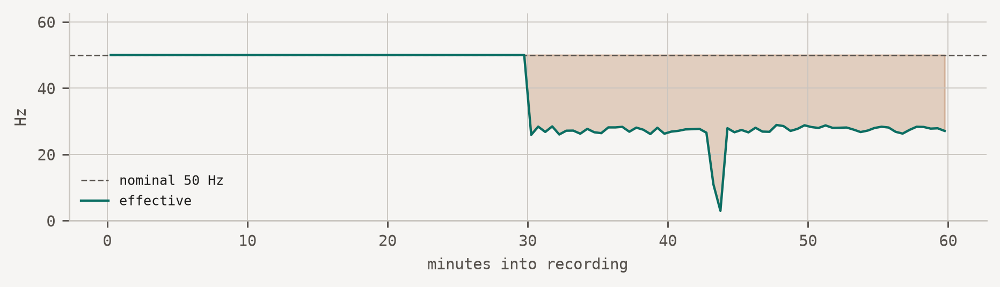

ACQUIRE Framework
Acquisition Criteria for Quality, Uncertainty, Integrity, Reproducibility, and Evidence
Reproducibility begins at acquisition.
Most in-the-wild sensing studies collect invalid data for weeks before anyone notices. Dashboards stay green, files keep arriving, and the failure only surfaces during analysis — when the fieldwork is already spent.
ACQUIRE is a guideline book and a set of diagnostics for catching those failures while they are still cheap to fix.
What silent failure looks like
Below is one hour of accelerometer data from a phone that reported itself healthy for the entire recording. The app requested 50 Hz. Every file arrived. No error was logged.
Running the diagnostics against it takes one line:
import acquire
report = acquire.check(df, nominal_hz=50)
report| ✓ | Timestamp monotonicity | 0 non-increasing steps | 0 | |
| × | Effective vs nominal sampling rate | 38.41 Hz (77% of nominal) | 50.00 Hz ±5% | recipe → |
| × | Stream continuity | 1 gaps, 45.1 s lost, longest 45.1 s | no interval > 1.0 s | recipe → |
| × | Sampling regularity | jitter 100.0% above median interval (p90) | ≤ 25% | recipe → |
| ✓ | Resting magnitude | 9.806 m/s² (1.000 g) | 9.807 m/s² ±2% | |
| ✓ | Stuck sensor | longest frozen run 0.0 s | ≤ 2.0 s | |
| ✓ | Saturation | 0.001% of samples at rail (±15.6 m/s²) | ≤ 0.1% |
ACQUIRE spec 26.7, acquire-framework 26.7.0
Two failures, both invisible to conventional monitoring, both traceable to a specific recipe. That is the whole idea.
What ACQUIRE v26.7 contains
The acquisition-failure taxonomy — eight failure modes by system layer, each mapped to its signature in the dataset and to the property it threatens. Table 1 of the paper, machine-readable.
The Minimum Reporting Checklist — ten methods-section disclosures about the measuring system. Table 2 of the paper. Complementary to CONSORT-EHEALTH and mERA, which report the intervention rather than the instrument.
The failure catalogue — entered by symptom, for when data already looks wrong. Each entry states what you observe, what causes it, how to detect it, and how well that detection is evidenced.
The guideline book — an operational companion for teams building a study, stage by stage.
Templates and forms — sensor schema, quality flags, uncertainty statement, dataset provenance, and a reviewer form.
A worked synchronization example — executable. Two BLE devices at +40 and −25 ppm, re-anchored at reconnection: completeness stays at 100% and every quality flag stays green while the inter-device offset spends 96% of the recording outside a ±20 ms tolerance, peaking near 0.8 s. A record-integrity audit passes this dataset; a measurement-validity audit does not.
Run it on your own data
The diagnostics are a Python package, intended to run in your own pipeline or CI against incoming study data:
git clone https://github.com/acquire-framework/acquire-framework.github.io
cd acquire-framework.github.io
uv sync --extra dev
uv run acquire check recordings/day01.csv --nominal 50It exits non-zero on failure, so it can gate a pipeline.
The diagnostics are not published to a package index yet — run them from a clone until they are.
There is also a browser-based demonstration that runs the same code locally in your tab — nothing is uploaded, and nothing leaves your device.
The paper
ACQUIRE — Acquisition Criteria for Quality, Uncertainty, Integrity, Reproducibility, and Evidence — treats the whole acquisition chain as a measuring system and evaluates it along three axes: measurement validity, record integrity and provenance, and observation-process validity.
Danioł, M. and Sroka, R. (2026). Reproducibility Begins at Acquisition: The ACQUIRE Framework for Trustworthy In-the-Wild Sensing. Companion of the 2026 ACM International Joint Conference on Pervasive and Ubiquitous Computing (UbiComp/ISWC ’26 Companion), Shanghai, China.
Status
Version 26.7. The catalogue is small and honest about it: every recipe carries an evidence level, and most are currently at the lowest one. The taxonomy is expert-derived and formative rather than systematically validated, and is brought to REPRODUCE for community evaluation and extension.
Replications are the single most useful contribution — see contributing.
Citation
BibTeX citation:
@inproceedings{daniol2026acquire,
author = {Danioł, Mateusz and Sroka, Ryszard},
publisher = {Association for Computing Machinery},
title = {Reproducibility {Begins} at {Acquisition:} {The} {ACQUIRE}
{Framework} for {Trustworthy} {In-the-Wild} {Sensing}},
booktitle = {Companion of the 2026 ACM International Joint Conference
on Pervasive and Ubiquitous Computing (UbiComp/ISWC ’26 Companion)},
date = {2026},
address = {Shanghai, China},
url = {https://acquire-framework.github.io},
langid = {en}
}
For attribution, please cite this work as:
Danioł, Mateusz, and Ryszard Sroka. 2026. “Reproducibility Begins
at Acquisition: The ACQUIRE Framework for Trustworthy In-the-Wild
Sensing.” Companion of the 2026 ACM International Joint
Conference on Pervasive and Ubiquitous Computing (UbiComp/ISWC ’26
Companion) (Shanghai, China). https://acquire-framework.github.io.